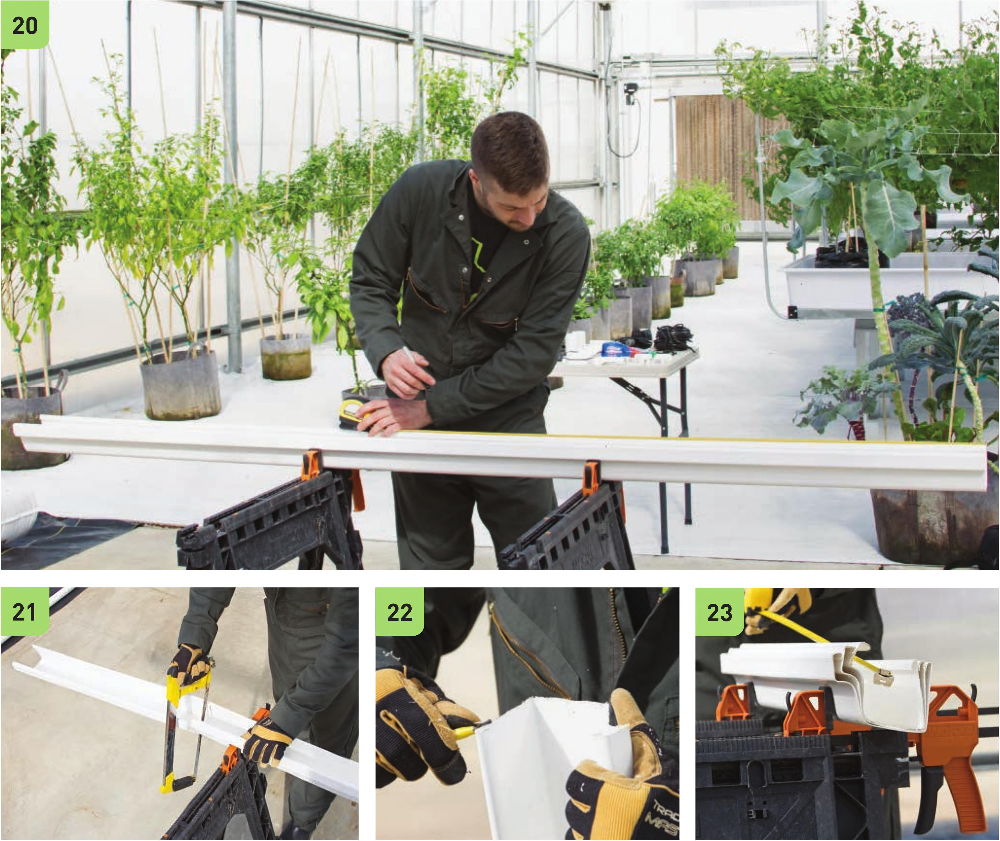

Trough Assembly Build the frame before assembling the troughs. The troughs need to be at least 3" wider than the frame to allow the gutter end caps to fit securely. 20 M easure and mark three 33" segments in the 10' vinyl gutter. 21 Cut the three 33" segments using a hacksaw and/or heavy-duty scissors. 22 Use the deburring tool to remove any burrs from the ends of the gutters. 23 Stack the three 33" gutter segments and fasten onto sawhorses with clamps. Measure and mark the center of the gutters at 1 6V2". 24 Use a step bit to create a W hole in the marked center of the gutters. The placement of this hole is very important! It should be placed closer to the curved edge of the gutter. The center of the hole is approximately 2" from the flat back of the gutter. Deburr the hole but make sure not to widen the hole too much. 126 DIY HYDROPONIC GARDENS
